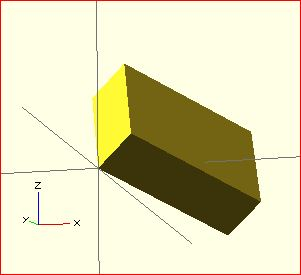
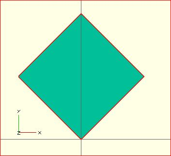

Rotates its child 'a' degrees about the axis of the coordinate system or around an arbitrary axis. The argument names are optional if the arguments are given in the same order as specified.
//Usage:
rotate(a = deg_a, v = [x, y, z]) { ... } // or
rotate(deg_a, [x, y, z]) { ... }
rotate(a = [deg_x, deg_y, deg_z]) { ... }
rotate([deg_x, deg_y, deg_z]) { ... }
The 'a' argument (deg_a) can be an array, as expressed in the later usage above; when deg_a is an array, the 'v' argument is ignored. Where 'a' specifies multiple axes then the rotation is applied in the following order: x, y, z. That means the code:
rotate(a=[ax,ay,az]) {...}
is equivalent to:
rotate(a=[0,0,az]) rotate(a=[0,ay,0]) rotate(a=[ax,0,0]) {...}
The optional argument 'v' is a vector and allows you to set an arbitrary axis about which the object is rotated.
For example, to flip an object upside-down, you can rotate your object 180 degrees around the 'y' axis.
rotate(a=[0,180,0]) { ... }
This is frequently simplified to
rotate([0,180,0]) { ... }
When specifying a single axis the 'v' argument allows you to specify which axis is the basis for rotation. For example, the equivalent to the above, to rotate just around y
rotate(a=180, v=[0,1,0]) { ... }
When specifying a single axis, 'v' is a vector defining an arbitrary axis for rotation; this is different from the multiple axis above. For example, rotate your object 45 degrees around the axis defined by the vector [1,1,0],
rotate(a=45, v=[1,1,0]) { ... }

Rotate with a single scalar argument rotates around the Z axis. This is useful in 2D contexts where that is the only axis for rotation. For example:
rotate(45) square(10);

Created with the Personal Edition of HelpNDoc: Produce electronic books easily